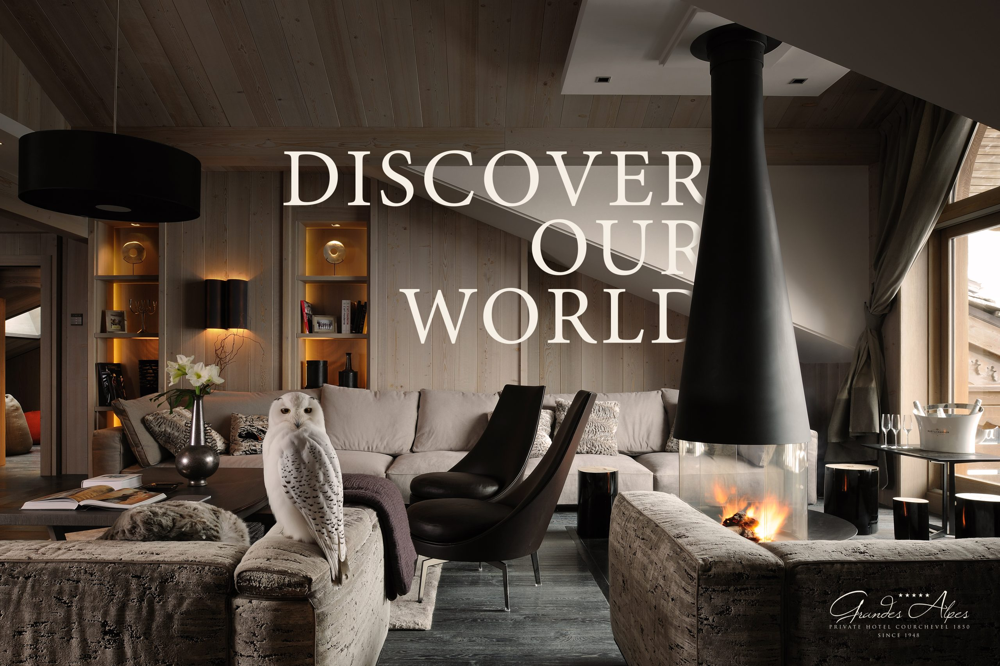
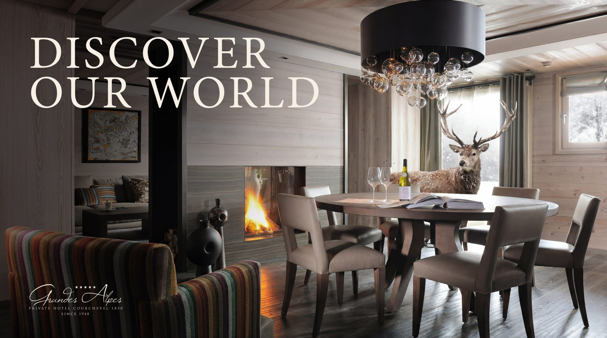
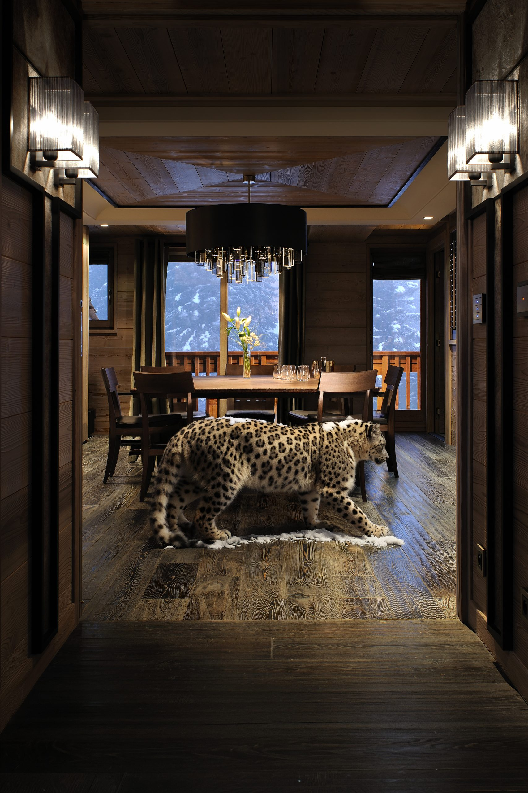
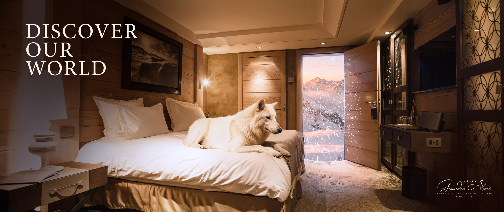
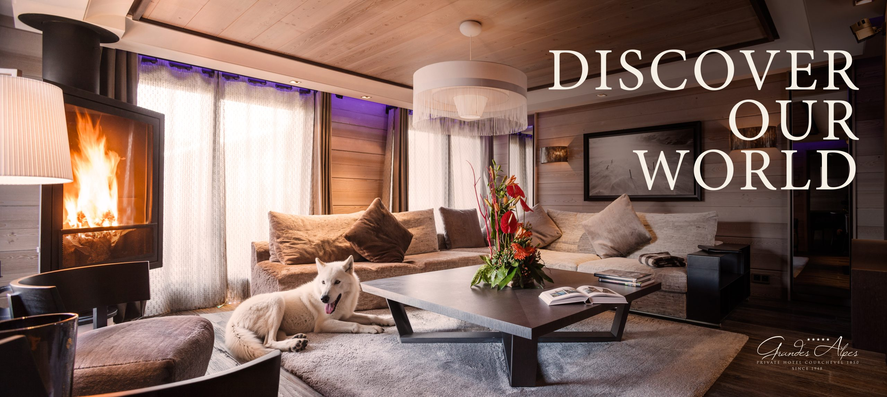
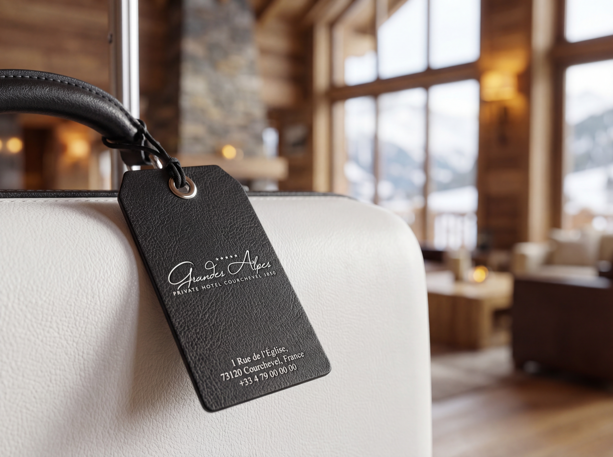
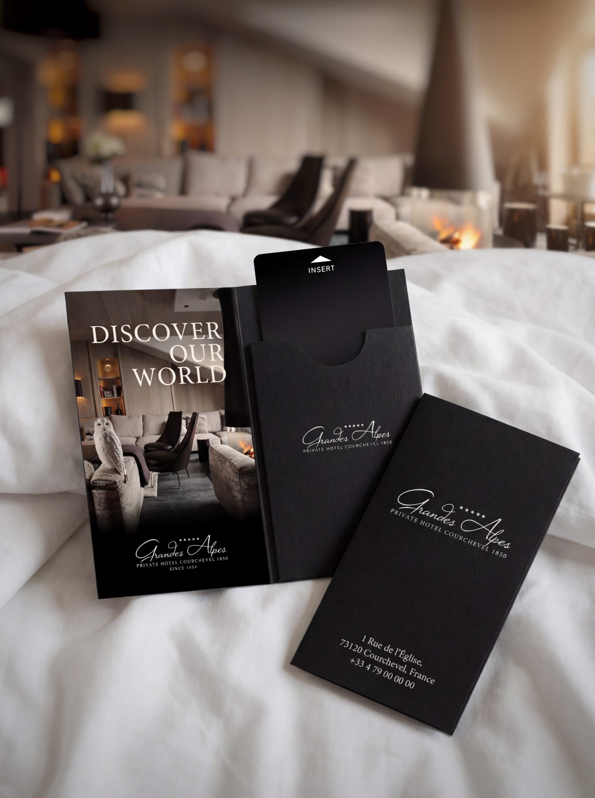
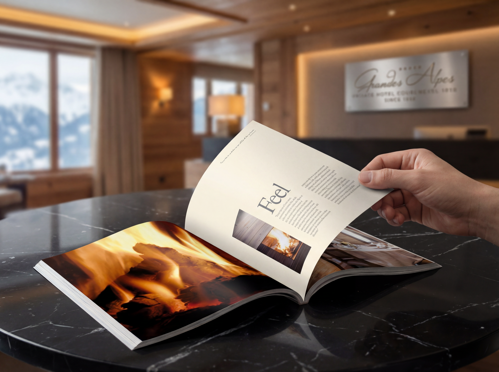
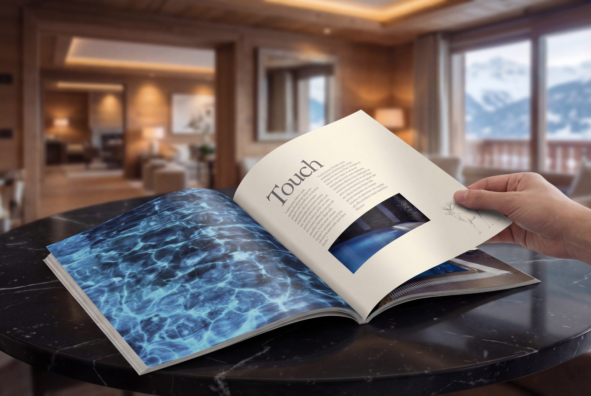
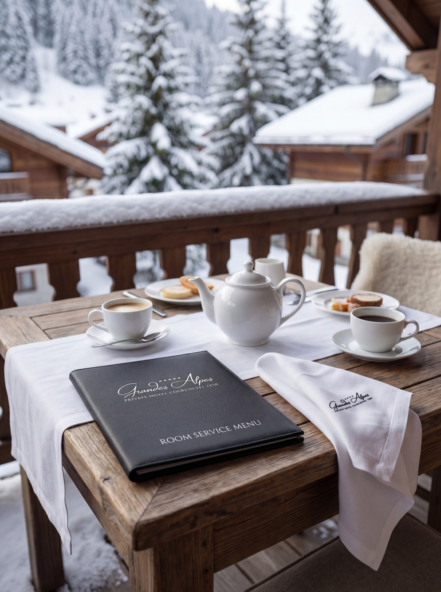

Work / 2026
Grandes Alpes
Discover our World
Grandes Alpes is one of the defining addresses in Courchevel 1850, nine private apartments, roots back to 1948, and a singular ski-in, ski-out setting. The brand needed to feel as considered as the guest experience itself. I evolved the identity through campaign concepts, advertising imagery, editorial collateral and branded guest materials.

A quieter expression of luxury
I moved the brand away from predictable signals of excess toward something more enduring: stillness, warmth, tactility and place. Heritage, interiors and personalised service lead the story, a more emotional, more memorable expression of luxury hospitality that feels elevated without becoming generic.



Bringing the mountain inside
The defining campaign idea was simple: bring the outside in. Wildlife appears within the suites and living spaces as if the alpine landscape had quietly crossed the threshold, turning the hotel interior into an extension of the mountain and giving the brand a distinctive conceptual edge.

Sensory touchpoints, editorial world
From magazine advertising to in-room collateral, every touchpoint was designed to feel calm, tactile and composed, elegant typography, low-key palettes, atmospheric image-making. The editorial direction privileges sensation over amenity: the firelit calm, the crafted interiors, the feeling of being exactly where you're meant to be.



Built to age beautifully
Because the work was built on durable truths, heritage, atmosphere, location and care, it remains relevant rather than chasing trends: a timeless alpine brand world rooted in experience.

